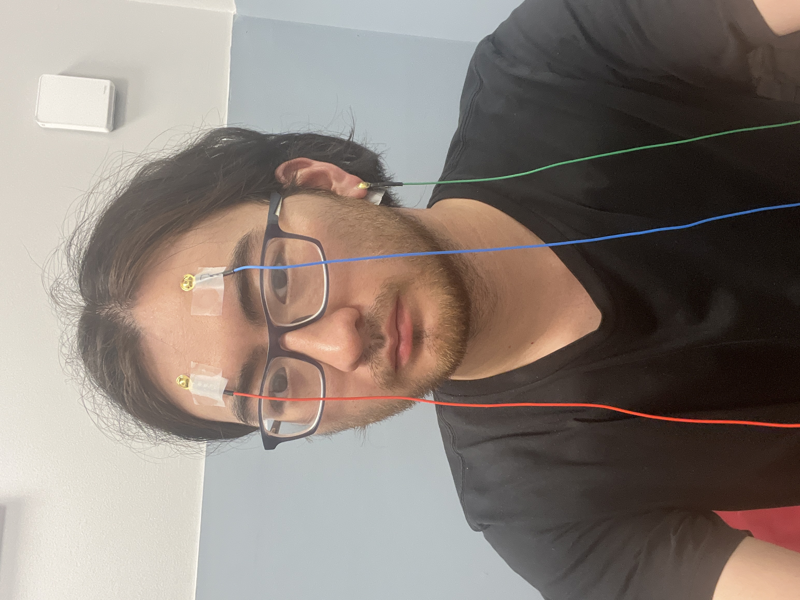
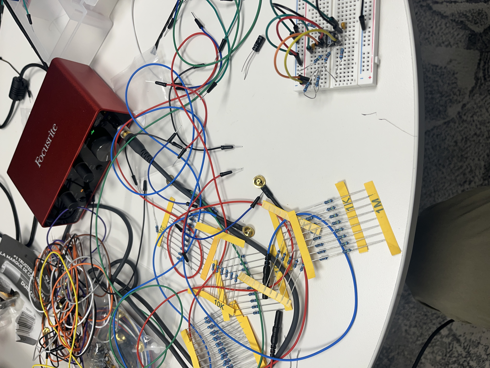

This isn't truly a "pet peeve", but it was a project idea that I've had but lacked the skills and tools to make.
This device is an EEG, an electro-encephalo-gram, meaning that it reads the electrical activity ("electro") from your brain ("encephalo") and draws lines ("gram").
Using those lines, I have mapped them onto tone, so that during spikes of higher-voltage activity (like clenching your teeth or squinting your eyes), you will hear sound change.
The project was not complete.


